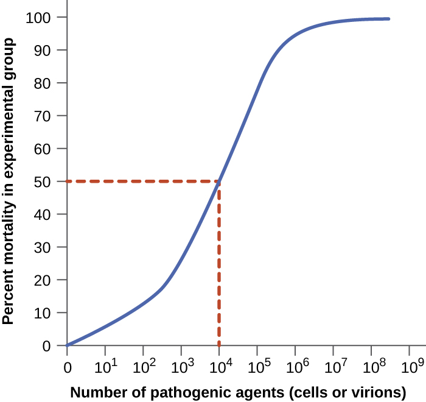
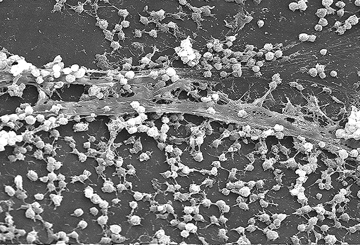
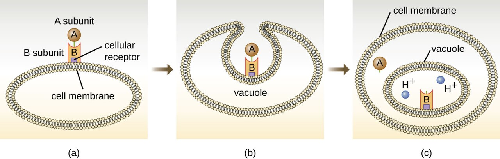
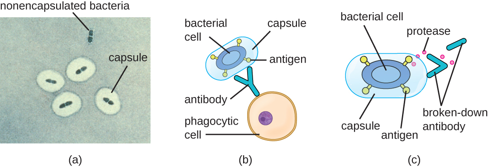
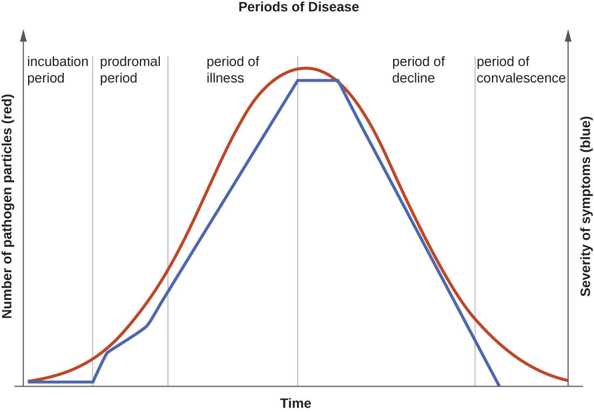

How Microbes Cause Disease
A pathogen does not make your patient sick by magic. It follows a script — get in, hold on, multiply, do damage, and dodge the immune system long enough to spread to the next host. Every step of that script is powered by a specific molecular tool, and every tool is a target that nursing care, drugs, and vaccines are built to block. This chapter takes apart the machinery of disease: what makes one microbe a killer and another a harmless bystander, how germs breach the body's borders and anchor themselves, the toxins and enzymes they use to wreck tissue, the disguises they wear to stay hidden, and the predictable stages an infection passes through from the moment of exposure to recovery. Understand the script, and you understand why we do almost everything we do at the bedside.
By the end of this chapter you can
- Distinguish pathogenicity from virulence, and explain what virulence factors are.
- Interpret ID₅₀ and LD₅₀ as measures of how infectious or deadly a microbe is.
- Name the major portals of entry and explain why the same microbe can be harmless at one portal and lethal at another.
- Describe how adhesins let pathogens attach, and why attachment is a drug and vaccine target.
- Compare exotoxins and endotoxin in source, chemistry, potency, and clinical effect.
- Explain how capsules, antigenic variation, and intracellular hiding let microbes evade host defenses.
- List the five stages of infection and identify when a patient is most contagious.
- Connect each step of the disease process to a specific nursing or public-health intervention.
Section 1Pathogenicity and virulence

Two words that are not the same
In everyday speech "pathogenic" and "virulent" get used interchangeably, but microbiology draws a sharp line between them, and the distinction is worth keeping straight. Pathogenicity is the ability of a microbe to cause disease at all — a yes-or-no property. Virulence is the degree of that ability — how much harm, how fast, at how small a dose. Two organisms can both be pathogens while sitting at opposite ends of the virulence scale: Clostridium botulinum is staggeringly virulent (on the order of a nanogram of its toxin per kilogram of body weight can kill), while a common cold rhinovirus is a genuine pathogen that rarely does more than make you miserable for a week.
It also matters whose pathogen we mean. A primary pathogen can cause disease in an otherwise healthy person with intact defenses — influenza, Salmonella, Mycobacterium tuberculosis. An opportunistic pathogen only causes disease when it gets an opening: a breached barrier, wiped-out normal flora, or a weakened host. Much of what a nurse guards against — catheter infections, ventilator pneumonia, Candida overgrowth — is opportunistic disease caused by organisms that would be harmless in a healthy person.
Virulence factors: the toolkit of harm
What makes one strain more virulent than another comes down to virulence factors — the specific genes and molecules that let a microbe establish itself and cause damage. These are not vague qualities; they are concrete structures and secreted products, and the whole rest of this chapter is essentially a tour of them. They fall into a few functional buckets: tools for attaching (adhesins), tools for spreading through tissue (invasins and enzymes), tools for damaging the host (toxins), and tools for evading defenses (capsules, antigenic variation). Because each factor is a distinct molecule, each one is a potential target — an antibody a vaccine can raise, an enzyme a drug can inhibit, a toxin an antitoxin can neutralize.
Measuring virulence: ID₅₀ and LD₅₀
Virulence can be quantified, which is how we compare organisms objectively. The ID₅₀ (median infectious dose) is the number of microbes needed to establish infection in half of an exposed population; the LD₅₀ (median lethal dose) is the amount of a microbe or toxin needed to kill half of them. A lower number means a more virulent agent, because it takes fewer organisms to do the damage. Shigella has an ID₅₀ of only 10 to 100 cells — which is exactly why it spreads so easily person-to-person and why hand hygiene is decisive — whereas Vibrio cholerae needs roughly a hundred million organisms, so it usually takes contaminated water to deliver a big enough dose.
| Term | What it measures | Low number means |
|---|---|---|
| Pathogenicity | Whether a microbe can cause disease (yes/no) | — |
| Virulence | How severe the disease it causes | — |
| ID₅₀ | Dose that infects 50% of a population | Very infectious (spreads at low dose) |
| LD₅₀ | Dose that kills 50% of a population | Very deadly (lethal at low dose) |
- Pathogenicity is the ability to cause disease; virulence is how much harm it does.
- Primary pathogens sicken healthy hosts; opportunistic pathogens need a breach, wiped-out flora, or a weakened host.
- Virulence factors are the specific molecules for attaching, spreading, damaging, and evading — each one a drug or vaccine target.
- ID₅₀ and LD₅₀ quantify virulence; a lower value means a more dangerous organism.
Section 2Getting in and attaching

Portals of entry
A microbe cannot cause infection until it reaches tissue it can colonize, and it gets there through a portal of entry — a specific route into the body. The great majority of pathogens enter through the mucous membranes of the respiratory tract (by far the most common — influenza, tuberculosis, the common cold), the gastrointestinal tract (Salmonella, hepatitis A, norovirus), the genitourinary tract (gonorrhea, chlamydia), or the conjunctiva of the eye. Others enter through the skin, which is normally an excellent barrier but is breachable through cuts, bites, burns, and surgical wounds. A special case is the parenteral route, where an organism is deposited directly into deeper tissue or the bloodstream — a needlestick, an IV line, a puncture wound — bypassing the surface defenses entirely.
The clinical punchline is that the same organism can be harmless at one portal and dangerous at another. Escherichia coli is a peaceful resident of the colon, but delivered to the bladder it causes a UTI, and reaching the bloodstream it can cause fatal sepsis. Every invasive device a nurse manages — a urinary catheter, a central line, an endotracheal tube — is essentially an artificial portal of entry that hands a microbe a shortcut past the body's borders. That is why device insertion is done sterile and why prompt removal is one of the most reliable infection-prevention moves there is.
| Portal of entry | Route | Example diseases |
|---|---|---|
| Respiratory tract | Inhaled droplets/aerosols | Influenza, TB, COVID-19, colds |
| GI tract | Ingested (fecal–oral, food, water) | Salmonellosis, hepatitis A, norovirus |
| Genitourinary tract | Sexual contact, ascending | Gonorrhea, chlamydia, UTIs |
| Skin / mucous breaks | Cuts, bites, burns, wounds | Cellulitis, tetanus, rabies |
| Parenteral | Directly into tissue/blood | Line infections, hepatitis B, HIV |
Adhesion: sticking around
Getting in is not enough — a microbe that cannot anchor itself is swept away by mucus, urine flow, peristalsis, or the tide of tears and saliva. So the next step is attachment, accomplished by adhesins: surface molecules (often on fimbriae, pili, or in the capsule and glycocalyx) that bind like a key to specific receptor molecules on host cells. This binding is precise and often explains a pathogen's tropism — why a given microbe infects one tissue and not another. When many organisms adhere and then encase themselves in a slimy matrix, they form a biofilm, a community that is dramatically harder for antibiotics and immune cells to penetrate. Biofilms on catheters, prosthetic joints, and heart valves are a major reason device-associated infections are so stubborn.
Because attachment is a mandatory first move, it is a favorite target for prevention. Some vaccines work by raising antibodies against a pathogen's adhesins so the microbe can never gain a foothold, and part of what hand hygiene, catheter care, and oral care in ventilated patients accomplish is physically removing organisms before they establish a biofilm.
Infectious dose
How many organisms does it actually take? That is the infectious dose, captured numerically by the ID₅₀ from Section 1. It depends on both the microbe's virulence factors and the host's defenses, which is why an exposure that does nothing to a healthy adult can seed a serious infection in an immunocompromised or very young patient. A pathogen armed with strong adhesins and a good evasion toolkit needs far fewer organisms to succeed, which loops back to why low-dose organisms demand such strict precautions.
- Pathogens enter through portals of entry: respiratory, GI, GU, conjunctiva, skin breaks, and the parenteral route.
- The same microbe can be harmless at one portal and lethal at another (E. coli: colon vs. bladder vs. blood).
- Adhesins anchor microbes to specific host receptors; clumped, matrix-encased communities become drug-resistant biofilms.
- Invasive devices are artificial portals of entry — sterile insertion and early removal are core nursing defenses.
Section 3Causing damage: exotoxins and endotoxin

Exotoxins: precision weapons
Much of the harm a pathogen does comes from toxins, and the more dramatic of the two families is the exotoxin. Exotoxins are proteins that bacteria manufacture and secrete, produced by both gram-positive and gram-negative organisms. Being proteins, they are exquisitely specific and often astonishingly potent — the toxins of tetanus, botulism, and diphtheria are among the most lethal substances known. They come in three broad styles. A-B toxins have two parts: a B (binding) subunit that latches onto a target cell and an A (active) subunit that enters and sabotages a specific internal process — diphtheria toxin halts protein synthesis, cholera toxin drives the massive fluid loss of rice-water diarrhea, and botulinum and tetanus toxins block neurotransmitter release to paralyze muscle. Membrane-disrupting toxins punch holes in host-cell membranes; these include the hemolysins that lyse red cells and the leukocidins that kill white cells. Superantigens short-circuit the immune system, triggering a huge, indiscriminate release of cytokines that produces the shock of toxic shock syndrome.
Two clinically useful facts follow from exotoxins being proteins. First, they are usually heat-labile — destroyed by cooking — which is why proper food handling prevents many toxin-mediated illnesses. Second, a protein toxin can be chemically inactivated into a toxoid that no longer harms but still provokes protective antibodies; the tetanus and diphtheria components of routine vaccines are toxoids, and pre-formed antitoxin antibodies can be given to neutralize circulating toxin in an acute poisoning.
Endotoxin: the gram-negative alarm
The second toxin is not secreted and not a protein. Endotoxin is the lipid A portion of lipopolysaccharide (LPS), a fixed component of the outer membrane of gram-negative bacteria. It is only released when the bacterial cell is damaged or dies — including when antibiotics lyse large numbers of organisms. Any single molecule of endotoxin is far weaker than a potent exotoxin, but the body's reaction to it is powerful and generic: fever, vasodilation with falling blood pressure, and widespread activation of clotting. When a bloodstream infection floods the body with endotoxin, that reaction becomes septic shock — dangerously low blood pressure and the microclotting of disseminated intravascular coagulation (DIC). Unlike a protein exotoxin, endotoxin is heat-stable and cannot be made into a toxoid, so there is no vaccine against it.
| Feature | Exotoxin | Endotoxin |
|---|---|---|
| Chemistry | Protein, secreted | Lipid A of LPS (outer membrane) |
| Source | Gram-positive & gram-negative | Gram-negative only |
| Released | Actively secreted by living cell | Only when the cell is damaged/lysed |
| Potency | Very high; specific effect | Lower per molecule; general effect |
| Heat stability | Usually heat-labile | Heat-stable |
| Toxoid / vaccine? | Yes (tetanus, diphtheria) | No |
| Typical effect | Specific (paralysis, diarrhea, etc.) | Fever, hypotension, shock, DIC |
- Exotoxins are secreted proteins — potent, specific, often heat-labile, and convertible to protective toxoids.
- Exotoxin styles: A-B toxins, membrane-disrupting hemolysins/leukocidins, and superantigens.
- Endotoxin is lipid A of LPS from gram-negative cells, released on lysis; it is heat-stable and has no toxoid.
- A flood of endotoxin drives fever, hypotension, septic shock, and DIC.
Section 4Evading the body's defenses

Capsules: the invisibility cloak
Getting in, holding on, and doing damage still isn't enough if the immune system mops the microbe up. So successful pathogens carry tools for immune evasion, and the classic one is the capsule — a thick, slippery polysaccharide layer around the cell. A capsule works two ways: it is physically hard for a phagocyte to grip and engulf, and it hides the surface molecules that antibodies and complement would otherwise latch onto. The capsule is the master virulence factor of several of the most feared pathogens — Streptococcus pneumoniae, Neisseria meningitidis, Haemophilus influenzae type b, and Klebsiella pneumoniae. It is no accident that the vaccines against these organisms are aimed squarely at the capsule: teach the immune system to recognize that coat and the invisibility cloak stops working.
Antigenic variation: the costume change
Another strategy is to keep changing the disguise. In antigenic variation, a microbe alters the surface molecules the immune system has learned to recognize, so that yesterday's antibodies no longer fit. Influenza does this every year through small mutations (antigenic drift) and occasionally through big reassortments (antigenic shift) — which is why the vaccine is reformulated annually and why a truly novel shift can cause a pandemic. Neisseria gonorrhoeae constantly reshuffles the proteins on its pili, one reason gonorrhea produces no lasting immunity and can reinfect the same person repeatedly. The trypanosomes of African sleeping sickness and the Borrelia of relapsing fever run the same trick, producing waves of illness as each new variant outruns the antibody response.
Hiding and sabotage
Pathogens have still more moves. Some become intracellular, living inside host cells where circulating antibodies cannot reach them — Mycobacterium tuberculosis famously survives inside the very macrophages sent to destroy it, and Listeria and Salmonella do the same. Others secrete IgA proteases that chop up the antibodies guarding mucous membranes, or coagulase that walls the organism off inside a clot of the host's own fibrin (a Staphylococcus aureus specialty). Some coat themselves in host proteins to look like "self," a trick called molecular mimicry. Each of these explains a clinical reality: TB requires months of therapy because the bug is hidden inside cells; staph abscesses often need drainage because antibiotics cannot penetrate the walled-off pocket.
| Evasion strategy | How it works | Example |
|---|---|---|
| Capsule | Blocks phagocytosis; hides surface antigens | S. pneumoniae, N. meningitidis |
| Antigenic variation | Changes surface molecules to dodge antibodies | Influenza, N. gonorrhoeae |
| Intracellular hiding | Lives inside host cells, out of antibody reach | M. tuberculosis, Listeria |
| IgA protease | Destroys mucosal antibodies | N. gonorrhoeae, H. influenzae |
| Coagulase | Walls the microbe inside a fibrin clot | Staphylococcus aureus |
- Capsules block phagocytosis and hide antigens; capsular vaccines target exactly this.
- Antigenic variation changes surface molecules so antibodies no longer fit (flu, gonorrhea).
- Intracellular hiding keeps microbes out of antibody reach and forces long therapy (TB).
- Coagulase and abscess formation are why "source control" — drainage or device removal — is often essential.
Section 5The stages of an infection

Five predictable stages
Most acute infections unfold along the same timeline, and knowing the stages tells you what to expect and when a patient is most dangerous to others. The incubation period runs from the moment of exposure to the first symptoms; the microbe is multiplying but the patient feels fine, and this interval can be hours (food poisoning) or years (HIV, TB). Next comes the prodromal period, a short phase of vague, non-specific complaints — mild fever, fatigue, general achiness — as the microbial load and the immune response both build. The period of illness is the peak: the microbe is most numerous, the signs and symptoms specific to the disease are at their worst, and this is when the patient is sickest and, untreated, most at risk. Then the period of decline arrives as the immune system (helped by treatment) gains the upper hand and symptoms recede, though the patient is weakened and vulnerable to secondary infections. Finally the convalescence period is recovery, when the body repairs itself and strength returns.
Why the stages matter at the bedside
The practical payoff is understanding communicability — when a patient can spread the infection — because it does not line up neatly with how sick they look. For many illnesses, shedding begins in the prodromal stage or even late incubation, meaning a person is contagious before they feel truly ill and before anyone suspects infection. Measles and influenza spread most in exactly this window, which is why a patient can seed an outbreak in a waiting room while feeling only "a little off." Just as important, some patients keep shedding organisms into the decline and convalescence stages, and a few become long-term carriers who feel completely well yet remain a source — the reason isolation precautions are timed to the organism's shedding pattern, not merely to how bad the patient's symptoms are right now.
| Stage | What is happening | Symptoms |
|---|---|---|
| Incubation | Microbe multiplying after exposure | None yet |
| Prodromal | Load and immune response building | Mild, vague (fatigue, low fever) |
| Illness | Microbe at peak; disease fully expressed | Most severe, disease-specific |
| Decline | Immune system gaining control | Subsiding; patient weakened |
| Convalescence | Recovery and tissue repair | Resolving; strength returns |
- Acute infections move through incubation → prodromal → illness → decline → convalescence.
- Symptoms peak during the period of illness, when the microbe is most numerous.
- Communicability often begins in the prodromal stage — patients spread infection before they seem sick.
- Some patients shed during decline/convalescence or become long-term carriers, so isolation is timed to shedding, not just symptoms.
The chapter in one breath
- Pathogenicity is whether a microbe causes disease; virulence is how much harm it does, measured by ID₅₀ and LD₅₀ (lower = more dangerous).
- Virulence factors — molecules for attaching, spreading, damaging, and evading — are the concrete tools of disease and the targets of drugs and vaccines.
- Microbes enter through portals of entry (respiratory, GI, GU, skin, parenteral) and anchor with adhesins; invasive devices are artificial portals nurses control.
- Exotoxins are potent secreted proteins (A-B toxins, hemolysins, superantigens) that can be turned into protective toxoids.
- Endotoxin is lipid A of LPS from gram-negative cells, released on lysis, driving fever, hypotension, septic shock, and DIC.
- Pathogens evade defenses with capsules, antigenic variation, and intracellular hiding — explaining vaccines, annual flu shots, and the need for drainage or long therapy.
- Infections pass through five stages, and patients are often most contagious in the prodromal phase, before they look sick.
ReferenceWords worth knowing
A quick reference for the terms in this chapter — skim it now, or circle back whenever a word trips you up.
- Adhesin
- A surface molecule (often on fimbriae or pili) that binds a pathogen to specific receptors on host cells so it is not washed away.
- Antigenic variation
- A pathogen's ability to change its surface molecules so previously formed antibodies no longer recognize it.
- Biofilm
- A matrix-encased community of adherent microbes that resists antibiotics and immune cells; common on catheters and implants.
- Capsule
- A thick polysaccharide layer around a cell that blocks phagocytosis and hides surface antigens.
- Carrier
- A person who harbors and can transmit a pathogen while showing no symptoms.
- Convalescence period
- The final stage of infection, during which the body recovers and repairs.
- Endotoxin
- The lipid A portion of LPS in the gram-negative outer membrane; released on cell lysis, causing fever, hypotension, and shock.
- Exotoxin
- A secreted protein toxin, often potent and specific; producible by gram-positive and gram-negative bacteria.
- ID₅₀ (median infectious dose)
- The number of microbes needed to infect 50% of an exposed population; a lower value means a more infectious organism.
- Incubation period
- The interval from exposure to the first appearance of symptoms.
- LD₅₀ (median lethal dose)
- The dose of microbe or toxin that kills 50% of a population; a lower value means a deadlier agent.
- Lipopolysaccharide (LPS)
- A molecule of the gram-negative outer membrane whose lipid A component is endotoxin.
- Opportunistic pathogen
- A microbe that causes disease only when defenses are breached, normal flora are lost, or the host is weakened.
- Pathogenicity
- The ability of a microbe to cause disease.
- Portal of entry
- The route by which a pathogen enters the body (respiratory, GI, GU, skin, or parenteral).
- Primary pathogen
- A microbe that can cause disease in a healthy host with intact defenses.
- Prodromal period
- An early stage of mild, non-specific symptoms as microbial load and immune response build.
- Superantigen
- An exotoxin that triggers a massive, non-specific cytokine release, producing shock.
- Toxoid
- A chemically inactivated exotoxin that no longer harms but still induces protective antibodies; used in vaccines.
- Virulence
- The degree of harm a pathogen is capable of causing.
- Virulence factor
- A specific molecule or structure that helps a microbe attach, spread, damage tissue, or evade defenses.